Wilbur
November 2017 - December 2017
Team: Kailin Dong, Ketki Jadhav, Jessica Kwon, Allison Mui, Violet Zhao
Wilbur is a service that helps teens learn financial literacy through virtual credit scores and enhanced financial conversations with their parents. This mobile application was created for a course, called Service Design.
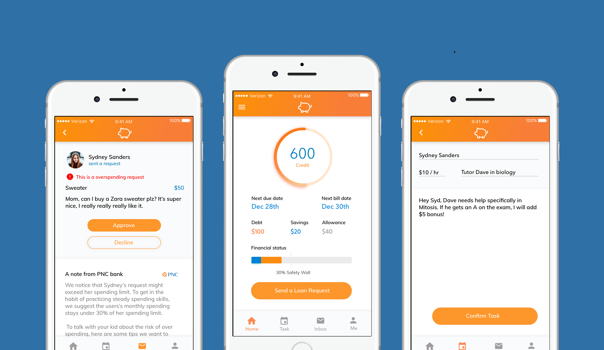
My Role
I was involved in this project, end to end. Through many rounds of speed dating, concept generation, design iterations, I contributed to every step along the way!
Service Summary
Through a mobile application, a teen (14-16) loans money from her parents to buy items. The teen can pay back her debt through virtual money earned through parent assigned tasks, such as chores or getting an A on an exam. The teen stores her earnings in a virtual piggy bank and at the end of the month, she will receive a bill from PNC and will pay back the debt she has owed her parents.
Simulating the real world, Wilbur:
Allows teens to loan money from the parent, who in real applications, represent the bank.
Provides a credit score that is affected by many factors such as timeliness in paying bills, amount of debt carried over, or amount of debt owed.
Suggests a 30% safety wall, which echoes the industry recommendation of spending 30% of one's credit allowance.
Research
Secondary Research
We first dove into research in order to understand the severity, scope, and impact of our problem. From financial literacy articles, we were able to gather valuable findings from various financial literacy articles. Some key findings were:
Financial education programs do exist, but its effectiveness is unknown because there is a lack of research and documentation.
Because there is a substantial difference among young adults, a one-size-fits-all model does not work. Programs should be targeted towards a specific audience and specific area of education.
Financial programs on market today work heavily on practicing financial skills, instead of teaching.
Primary Research
After reading up on articles, we created a set of questions to gauge financial knowledge, such as current financial habits, emotional responses to financial conversations, and familiarity of financial terms. With these questions, we surveyed parents and teenagers.
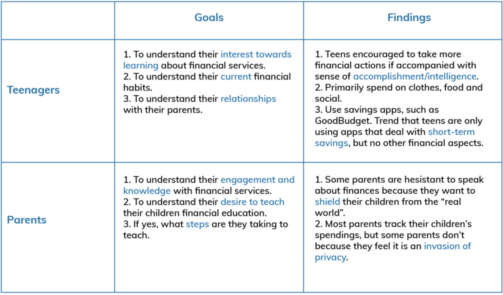
Primary Models
Stakeholder/Value Flow Model
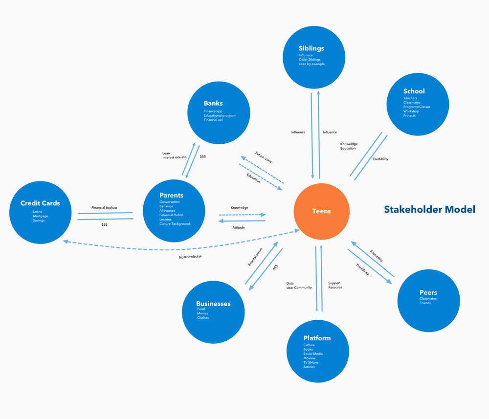
We identified three key opportunity areas, ones that our service could focus on improving.
Teens & Tools - Too many tools on market currently practice money management skills, specifically short-term savings.
Teens & Banks - Banks are connected to teens through parents. However, currently, teens never get the opportunity to interact with banks until they are of age.
Teens & Parents - Parents can be the most influential element to teenagers when it comes to credit card usage. Their behavior models how teens conceptualize credit card usage.
Current State Model
To understand the problem's current effect, we created a current state model on how teenagers earn and spend money.
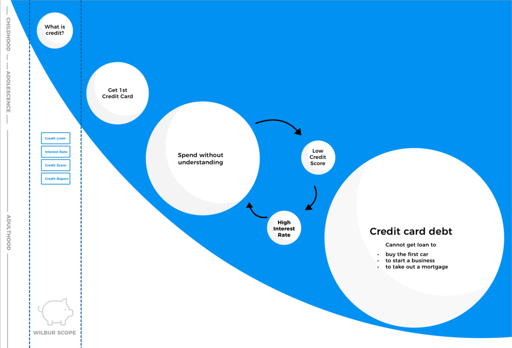
Concept Generation
Out of the 30 high level concepts we ideated, we created two storyboards to speed date.
An interactive platform that sets saving and earning goals
An application that suggests what to do with a deposit going forward, such as moving into a growth account or investing.
Feedback
Concepts are too goal-oriented. Solutions were mainly goal-oriented trackers.
Parents are important stakeholders, but what is their role in our concepts?
No teaching of financial literacy!
Refinement
From here we decided to pivot our direction to target high school freshman and sophomores, ages 14-16. The reasons for choosing this new age group are:
Teens at this age still heavily rely on their parents. Therefore, parental support would be included and easier to engage from both user sides.
This is a time before teens need to be financially independent. Practicing financial skills beforehand will better prepare them to enter the next stage of their lives.
Storyboards
We brainstormed 4 more concepts that were brought to the field for speed dating.
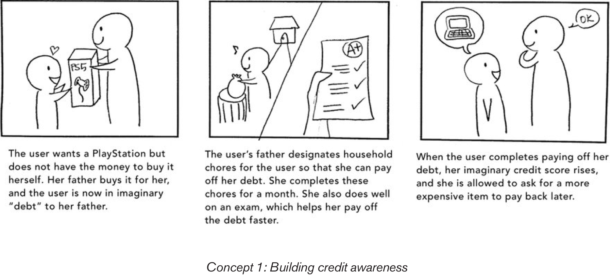
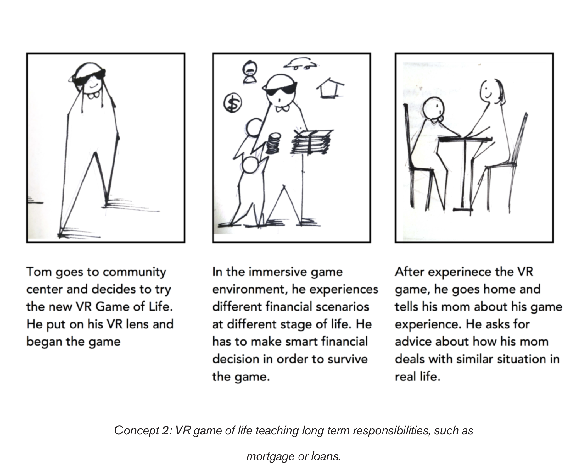
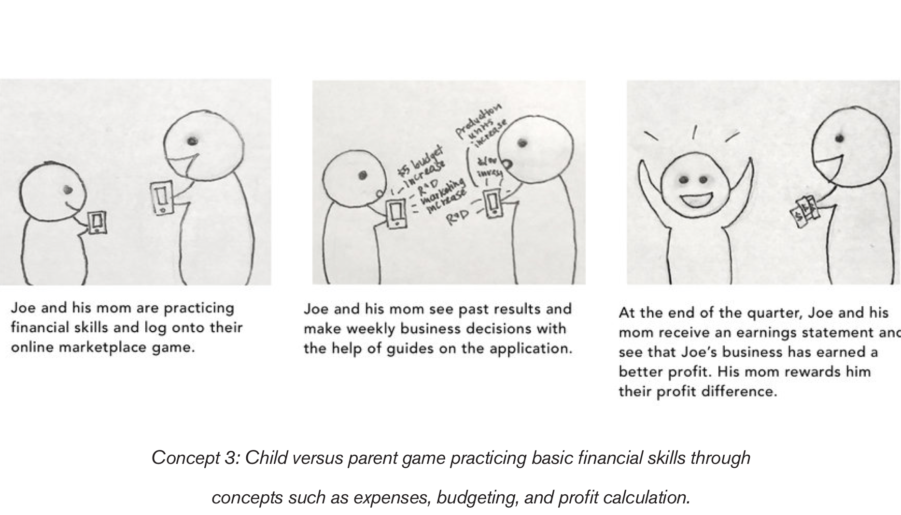
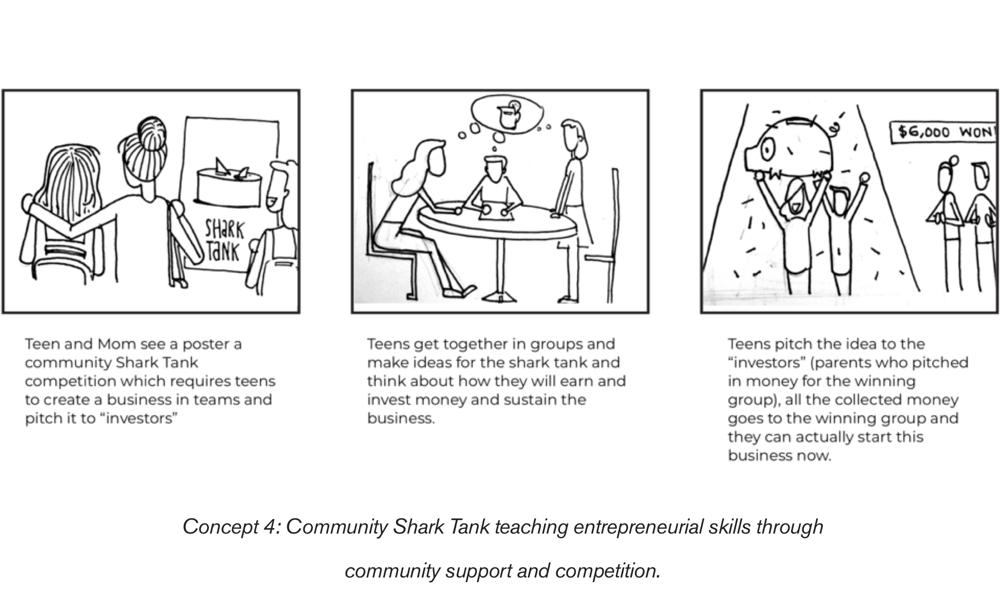
Speed Dating Feedback
We conducted speed dating with 5 parents, 4 high school teens, and 2 financial professionals to validate the need for our concepts.
From our speed dating results, we found that the credit score concept had the most potential and created the most enthusiasm amongst all of our stakeholders.
A few things that were emphasized from our speed dating responses was the:
Negative risky nature of credit score, from the parent's perspective.
Positive feeling of maturity and freedom that comes with financial independence, from the teen's perspective.
Hundreds of ill-meaning banks give off a predatory nature towards college freshman by pushing credit cards to unprepared financial minds.
Final Service
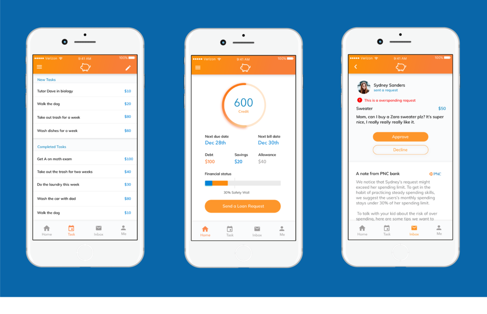
Throughout this concept, the teen asks her mom to buy her a gift and in return, she completes household chores and other tasks to pay off her "debt." If the teen's debt is paid off in time, her "credit score" goes up and she is allowed to ask for a more expensive gift the next time.
Value Proposition
Teens get to buy the items they want, while also feeling that they earned it.
Parents get their children to practice good financial skills as well as engage in meaningful educational discussions with their children.
PNC will gain loyal credit card customers since Wilbur will be a long term use service. Additionally, PNC will gain reliable card holders with good credit scores, which will lead to more loan applications and ultimately, a better bank economy
Personas
Below are Jennifer and Sydney. They are the personas we created that will be portrayed by Kailin and I in our concept video.
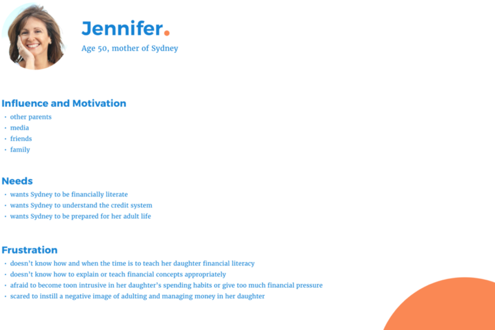
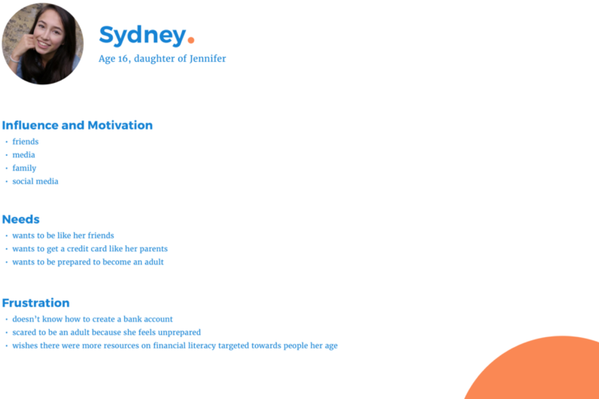
Concept Video
Lessons Learned
I learned the importance of rapid concept generation; Concept generation taught me how to explore the not so great ideas in order to let the better ideas shine through.
I learned how to approach people at coffee shops and on the sidewalk!
This was my first time working with an actual client so working to incorporate the needs of the target users as well as a client was very new.